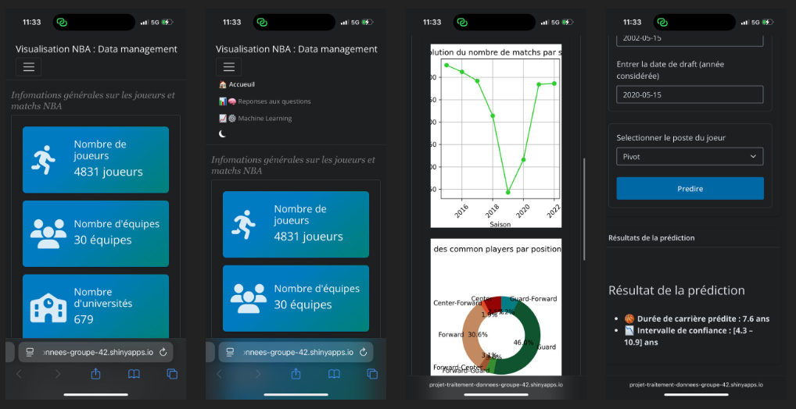

01Context
Historical NBA data from 1946 to 2023, spread across several files on players, drafts and game statistics.
02Question
Can a player's career length be predicted from his profile and early performance, with an honest measure of uncertainty?
03Obstacle
The data needed heavy harmonisation (renamed franchises, missing values), many predictors were correlated, and a single predicted number would hide how uncertain each prediction is.
04Choices
How to handle correlated predictors?methodological question
- Tension
- Multicollinearity makes coefficients unstable.
- Choice
- Multicollinearity checks and Ridge regularisation, chosen by k-fold cross-validation.
How to communicate uncertainty?methodological question
- Tension
- A point prediction looks more precise than it is.
- Choice
- Prediction intervals for each player, shown in a Shiny application.
05Work
- Raw files
- Harmonisation
- Encoding and checks
- Ridge regression (k-fold)
- Prediction intervals
- Shiny app
06Checks
- k-fold cross-validation.
- 214 unit tests on the modelling class and the application.
07Outcome
A tested model and an interactive application. Age at entry, position and performance indicators were among the most important predictors.

08Limits
What remains open
- An error of about 4 years is large for one player: the model is useful for trends, not for individual decisions.
What I took from it
- Show uncertainty explicitly instead of hiding it behind one number.